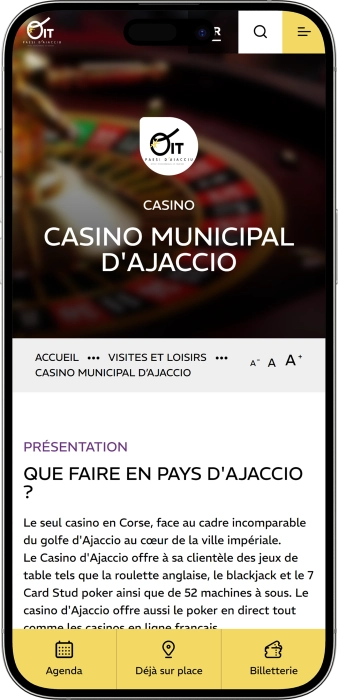

Offre de bienvenue exclusive de
Offre de bienvenue exclusive de
Casino d’Ajaccio — jeux, ambiance, bars et divertissements
Top casinos
Détails du bonus
Casino
Bonus
Note
Tours gratuits
Plus d'infos
Obtenir
Avantages
-
Emplacement pratique près du front de mer
-
Machines à sous modernes, catalogue renouvelé
-
Tables en direct : roulette et blackjack
-
Poker cash game et tournois le soir
-
Ambiance conviviale, débutants et habitués
-
Restaurant et bar pour faire une pause
-
Horaires étendus jusqu’à tard la nuit
- Le Casino d’Ajaccio séduit par un équilibre entre jeu, détente et vie nocturne. On peut y organiser une soirée complète : slots, tables, puis une pause gourmande. L’expérience reste fluide, confortable et pensée pour différents styles de joueurs.
Casino d’Ajaccio App


À propos Casino d’Ajaccio
Le casino se démarque par un mix entre sensations immédiates sur les slots et jeu plus technique aux tables. On y enchaîne facilement jeu, bar et dîner, avec une soirée rythmée et complète.
- Bonus jusqu’à 200 €.
- Jackpots jusqu’à 50 000 €.
- Tournois dotés 5 000 €.
Le Casino d’Ajaccio est un lieu où le jeu se combine naturellement avec la détente et l’esprit de la ville. Les intérieurs évoquent une ambiance de soirée, sans tomber dans l’excès de rigidité. La salle des machines à sous offre des thèmes variés, du classique au plus moderne. Les jeux de table apportent le ressenti d’un « vrai casino » et plaisent aux amateurs de rythme et de stratégie.
L’espace poker attire celles et ceux qui aiment la compétition et les échanges. Entre deux sessions, on passe facilement au bar ou au restaurant pour garder un tempo agréable. Le personnel guide volontiers les nouveaux visiteurs et explique les bases si besoin. Des animations et soirées thématiques renouvellent l’expérience au fil des semaines. On peut y venir pour une courte parenthèse ou pour une soirée complète. L’ensemble en fait une destination polyvalente, axée sur le plaisir, le service et une vraie vie nocturne.
Casino d’Ajaccio — une ambiance chic pour une soirée complète
Le Casino d’Ajaccio accueille avec une atmosphère élégante et résolument “soirée” : lumières douces, détails soignés et sensation d’intimité dans les espaces de jeu. Le style équilibre une touche classique de casino et une modernité urbaine, ce qui rend l’endroit agréable aussi bien en tenue habillée qu’en casual soigné. L’agencement facilite la circulation entre machines à sous, tables et zones de détente. Le rythme interne se construit surtout en fin de journée, lorsque l’énergie monte et que l’on ressent davantage l’esprit “sortie”. Cette ambiance permet de concilier adrénaline au jeu et confort pendant les pauses.
Les horaires s’adressent à celles et ceux qui aiment les sorties tardives et les soirées sans précipitation. En général, l’ouverture se fait en journée avec une fermeture très tardive, parfois prolongée lors des périodes plus animées. C’est pratique si vous souhaitez d’abord vous promener, dîner, puis venir jouer. Ce type de planning rend la gestion du temps et du budget plus simple : une session, une pause, puis un retour aux tables. La flexibilité plaît beaucoup, car on n’est pas contraint par une fermeture trop tôt. Le casino s’intègre ainsi facilement à un programme urbain ou touristique.
Les bars occupent une place clé, car ils structurent les pauses et l’expérience globale. Le bar est souvent perçu comme un point de respiration : cocktail, encas léger, conversation, puis retour au jeu sans stress. En soirée, il peut devenir un vrai prolongement de l’animation, avec une ambiance plus musicale et plus festive. C’est idéal pour ceux qui viennent autant pour socialiser que pour tenter leur chance. Le Casino d’Ajaccio prend alors une dimension de lieu de vie nocturne, au‑delà du simple jeu. Et la partie restauration permet de conclure la soirée dans un cadre confortable et qualitatif.
Côté hébergement, on privilégie généralement des hôtels en ville, proches, afin de rester autonome la nuit. Beaucoup de visiteurs choisissent un établissement à distance de marche ou à quelques minutes en taxi. Cette option est particulièrement agréable si vous prévoyez une longue soirée, un show ou une session poker prolongée. Cela évite aussi les contraintes de stationnement et les retours tardifs compliqués. On gagne en sérénité, en sécurité et en confort. Pour les voyageurs, c’est un avantage pratique majeur.
Les animations et événements contribuent à l’image “soirée complète” du Casino d’Ajaccio. Dans ce type d’établissement, on retrouve souvent des soirées à thème, des sets musicaux, des mini‑shows et des rendez‑vous saisonniers qui renouvellent l’intérêt. La régularité donne envie de revenir : un jour plutôt jeu et cocktails, un autre davantage musique et ambiance. Même si l’on vient avant tout pour les machines, l’animation crée un décor vivant et une sensation d’instant spécial. En groupe, c’est particulièrement efficace : certains jouent, d’autres profitent du bar, et tout le monde s’amuse. Le casino devient alors une destination de divertissement globale.
Les programmes bonus et la fidélité reposent généralement sur une logique simple : plus vous revenez, plus les avantages deviennent personnalisés. Cela peut inclure des attentions, des invitations à des événements, des offres dédiées sur le bar ou le restaurant, ainsi que des statuts donnant accès à davantage de privilèges. L’intérêt est de transformer l’expérience en relation durable, au‑delà d’un service standard. Les habitués y gagnent souvent en confort et en valeur, notamment lors des soirées spéciales. Les nouveaux visiteurs, eux, découvrent un cadre accueillant qui encourage la découverte progressive. Au final, le Casino d’Ajaccio s’impose comme un lieu où l’on aime revenir.
Service et argent au Casino d’Ajaccio — équipe, paiements et retrait des gains
Au Casino d’Ajaccio, le personnel agit généralement selon une logique “accueil + respect des règles” : accueil, contrôle d’accès, orientation et assistance dans les espaces. Les équipes savent en principe expliquer les bases, indiquer les zones des machines, des tables, du poker, ainsi que l’emplacement de la caisse. Une part importante du rôle consiste à maintenir une ambiance sereine et à faire respecter les procédures internes. En cas de situation délicate, l’approche est souvent méthodique, ce qui réduit les tensions. Ce cadre rassure particulièrement les nouveaux visiteurs, qui recherchent une expérience simple et claire.
Pour les langues, le français reste la référence, et l’anglais est fréquemment compris au moins à un niveau fonctionnel, surtout lorsque l’affluence est plus forte. Les visiteurs peuvent ainsi demander des informations sur l’entrée, le fonctionnement de la caisse ou l’organisation des jeux. Si vous craignez une barrière linguistique, les périodes plus animées offrent souvent davantage de disponibilité. La signalétique à l’intérieur aide aussi : pictogrammes, flèches, panneaux, repères visuels. Même avec un niveau de langue limité, on se repère facilement. L’objectif est de répondre vite et de préserver le rythme de la soirée.
La monnaie de référence est l’euro, ce qui simplifie la gestion du budget jeu et détente. Les paiements se font le plus souvent par carte bancaire et en espèces, et selon les services, le sans‑contact peut être disponible lorsque le règlement de caisse l’autorise. En pratique, beaucoup de clients combinent : carte pour le bar/restaurant, espèces pour le jeu afin de mieux contrôler les limites. Il est utile de vérifier à l’avance vos plafonds et les frais éventuels, surtout si la carte est émise hors zone euro. Cette préparation évite les surprises et préserve le confort. Dans un casino, la maîtrise du budget fait partie de l’expérience.
Concernant les distributeurs et le change, l’organisation vise généralement à ne pas casser le rythme : retrait à proximité et infrastructure bancaire en ville. Pour le change, il est souvent préférable d’effectuer l’opération dans des points officiels en ville et d’utiliser ensuite des euros au casino. Cela limite les écarts de taux et rend les dépenses plus lisibles. Le soir, on préfère éviter des démarches longues, d’où l’intérêt de préparer en amont. Les montants importants peuvent aussi entraîner une vérification d’identité, pratique normale de sécurité. Plus vous anticipez, plus les formalités sont rapides.
Le retrait des gains est généralement simple : vous validez le résultat (ticket machine ou règlement de table) puis vous passez à la caisse selon la procédure. Une pièce d’identité peut être demandée, en particulier pour des montants significatifs ou lorsqu’une traçabilité comptable est nécessaire. Le paiement se fait le plus souvent en espèces ou selon les règles internes, et pour des sommes très élevées, des étapes additionnelles peuvent exister : contrôle, saisie des données, choix du mode de règlement. Ces mesures protègent le joueur et répondent aux exigences financières. Il est conseillé de conserver tous les justificatifs jusqu’à la fin. Cela garantit une opération claire et sécurisée.
La fiscalité des gains dépend du profil du joueur et des règles applicables à sa situation, il n’existe donc pas une réponse unique. Le casino n’a pas vocation à remplacer un conseil fiscal personnalisé : le plus sûr est de connaître ses obligations et de consulter un professionnel si nécessaire. Conserver les preuves de paiement et les justificatifs est utile si vous devez déclarer ou documenter un historique financier. Pour la majorité des visiteurs, l’essentiel reste d’obtenir un paiement fluide et sans stress. Avec une pièce d’identité disponible et le respect des procédures, tout se déroule généralement sereinement. Vous profitez ainsi d’un retrait de gains fiable et compréhensible.
Règles de visite au Casino d’Ajaccio — tenue, accès et itinéraire
Le Casino d’Ajaccio applique des règles claires, comme la plupart des casinos terrestres, afin de garantir confort et sécurité. À l’entrée, un contrôle d’âge est généralement effectué, l’accès étant réservé aux personnes majeures. La présentation d’une pièce d’identité avec photo est une pratique courante, surtout en soirée et lors des périodes d’affluence. À l’intérieur, le respect d’autrui et une attitude calme sont essentiels, car l’établissement suit un cadre précis. La prise de photos ou de vidéos est souvent limitée dans les zones de jeu pour préserver la confidentialité. La consommation d’alcool s’inscrit dans des règles internes : il est important de rester dans un état approprié. Arriver un peu plus tôt permet de passer les formalités sans stress, notamment quand il y a du monde. Côté tenue, un style soigné est recommandé : un look trop “plage” ou négligé peut entraîner un refus. Selon les espaces, l’usage du téléphone et de certains appareils près des tables peut être restreint. Pour une longue session, mieux vaut vérifier les horaires et choisir un moment plus calme. L’accès est généralement simple grâce à la localisation urbaine, avec taxi, transports et marche.
Tenue (dress‑code)
- • Casual soigné ou tenue de soirée, chaussures propres, présentation soignée.
- • Éviter tenue de plage, tongs, look trop sportif ou trop “maison”.
Conditions d’accès :
- • Accès réservé aux majeurs avec une pièce d’identité photo.
- • Respect des règles de salle : personnel, joueurs et procédures de jeu.
Interdictions et restrictions :
- • Restrictions photo/vidéo dans les zones de jeu pour la confidentialité.
- • Interdiction de perturber le jeu ou de troubler l’ordre.
- • Refus possible en cas de comportement inadapté ou d’état non conforme.
Stationnement et accès :
- • Privilégier les parkings urbains et finir à pied.
- • Taxi conseillé pour un retour tardif.
- • En transports, viser un arrêt central puis un court trajet à pied.
Programme de fidélité du Casino d’Ajaccio — statuts, points et avantages
Le programme de fidélité au Casino d’Ajaccio est généralement conçu pour récompenser la régularité et l’activité de jeu de manière simple. Le visiteur s’inscrit une seule fois, puis reçoit une carte ou un profil, sur lequel des points sont crédités. Les points s’accumulent via les machines à sous, certaines animations et parfois via la restauration selon les règles de l’établissement. Plus l’activité est élevée, plus le statut progresse et plus les offres deviennent personnalisées. Pour les nouveaux, c’est un moyen d’obtenir rapidement de petites attentions et de se sentir à l’aise. Pour les habitués, la valeur se révèle dans les invitations, les bonus renforcés et les priorités d’accès. Les niveaux offrent souvent un service plus fluide et des compléments réguliers. Des avantages “anniversaire” et des périodes à points doublés sont fréquents. Le grand plus reste la personnalisation : on reçoit des offres adaptées à son style de jeu. Bien utilisée, la fidélité améliore le budget détente et enrichit l’expérience.
Conditions d’inscription :
- • 18+ et pièce d’identité photo pour créer le profil.
- • Formulaire simple (coordonnées pour offres ciblées).
- • Carte/numéro de membre attribué sur place.
- • Acceptation du règlement du programme et des données.
Statuts et obtention
- • Start — inscription : bonus de bienvenue 10 € en crédits de jeu (1 fois).
- • Silver — dès 500 points/mois : coupon “cashback” 5 € mensuel.
- • Gold — dès 1 500 points/mois : bonus 20 € + priorité tournois.
- • Platinum — dès 3 000 points/mois : bonus 50 €, soirées privées.
- • VIP — sur invitation : avantages personnalisés et attentions premium.
Bonus et privilèges
- • Bienvenue : jusqu’à 10 € en crédits — démarrer rapidement.
- • Jours x2 points : points doublés certains jours.
- • Anniversaire : coupon 15 € (jeu/bar selon conditions).
- • Invitations tournois : accès à des dotations type 1 000–5 000 €.
- • Combo “bar+jeu” : coupon 10 € cocktail après activité.
- • Offres personnalisées : bonus 5–50 € selon historique.
Fournisseurs de logiciels
Divertissement et jeux au Casino d’Ajaccio
Bonus et offres spéciales du Casino d’Ajaccio — jeu, sorties et saisons
En dehors de la fidélité, le Casino d’Ajaccio propose généralement des mécaniques promotionnelles qui rendent la visite plus attractive. Ces offres sont souvent liées à des jours précis, à des créneaux horaires ou à des périodes saisonnières plus animées. Côté machines à sous, on retrouve fréquemment des heures promotionnelles avec crédits additionnels ou mini‑tirages au sort, faciles à comprendre et dynamiques. Pour les jeux de table, les soirées thématiques et mini‑défis permettent de jouer dans un cadre plus “événementiel” sans exigences trop élevées. Une autre catégorie concerne l’art de vivre : formules “jeu + boisson” ou “jeu + dîner” pour une soirée complète. Durant les périodes festives, des opérations renforcées apparaissent, avec cadeaux, jackpots accélérés ou vouchers. Certaines offres incitent aussi à découvrir un nouvel univers, comme la roulette ou une soirée poker. Les chiffres ci‑dessous sont des exemples indicatifs, à vérifier sur place, car les packs évoluent. La logique reste toutefois stable : bonus de visite, bonus d’activité, tirages, soirées à thème. Pour une page SEO, l’intérêt est de montrer la variété et la valeur ajoutée au‑delà du jeu. Voici des exemples concrets.
Текст
- • Pack “première visite”: Pack “première visite”
- • Happy Hours machines: Crédits +10% sur un créneau défini en semaine.
- • Tirage slots hebdomadaire: Tirage avec gains jusqu’à 2 000 € pour les joueurs actifs.
- • Mini‑jackpots du soir: Série de jackpots rapides 100–500 € chaque soirée.
- • Week‑end poker tournoi: Buy‑in dès 50 €, garantie 3 000 €.
- • Soirée roulette: Jetons‑cadeaux 5–25 € pour les participants.
- • Combo “dîner + jeu”: Voucher restaurant 15 € après activité définie.
- • Offres saisonnières: Cadeaux/vouchers 10–50 € pendant les semaines festives.
Jeux populaires au Casino d’Ajaccio — slots, tables et poker au même endroit
Le Casino d’Ajaccio propose généralement un mélange de formats très demandés, afin que chacun trouve son rythme. Pour des sensations immédiates, la zone machines à sous est idéale : règles simples, cadence rapide et thèmes variés, du classique au vidéo‑slot moderne. Les amateurs d’ambiance “live” se tournent vers les tables, où la gestion des mises et la psychologie comptent davantage. La roulette reste populaire grâce à sa simplicité et à la diversité de ses paris, permettant une approche prudente ou plus offensive. Le blackjack attire ceux qui recherchent plus de contrôle et apprécient une logique plus “mathématique”. L’espace poker séduit par la dimension sociale et compétitive, avec la possibilité d’exprimer un vrai savoir‑faire contre d’autres joueurs. Pour les débutants, beaucoup de jeux s’apprennent en une soirée, surtout en démarrant avec des mises modestes. L’expérience est aussi une question d’ambiance : jetons, croupiers, rythme des tables, sensation d’événement. Le choix dépend souvent de l’objectif : se divertir, socialiser, jouer stratégique ou viser un “bon spin”. Alterner les formats aide à rester lucide et à profiter plus longtemps. Voici les incontournables.
- • Machines à sous : tours rapides, thèmes variés, bonus fréquents.
- • Roulette : grande classique, nombreux types de paris.
- • Blackjack : jeu de décisions, objectif clair — faire 21.
- • Poker Texas Hold’em : compétition entre joueurs, cash games et tournois.
- • Stud Poker : format structuré, étapes de mise définies.
- • Roulette électronique : rythme rapide, pratique pour débuter.
Mises au Casino d’Ajaccio — minimums et maximums par jeu
Connaître les limites de mise aide à gérer son budget et à choisir un format adapté. Au Casino d’Ajaccio, les machines à sous offrent souvent l’entrée la plus flexible, tandis que les tables demandent des mises plus “structurées” par coup. Le poker varie selon les tables cash (blindes) et les tournois (buy‑in), avec une logique différente de gestion. Le tableau ci‑dessous sert d’indication SEO avec des fourchettes typiques pour donner un ordre d’idée. Les limites réelles peuvent évoluer selon l’horaire, la table et les événements.
| Jeu | Mise minimum | Mise maximum |
|---|---|---|
| Machines à sous | 0,02 € | 100 € |
| Roulette | 2 € | 500 € |
| Blackjack | 10 € | 1 000 € |
| Roulette électronique | 0,50 € | 200 € |
| Poker cash game (blindes) | 1/2 € | 10/20 € |
| Tournoi poker (buy‑in) | 50 € | 300 € |
Événements et divertissements au Casino d’Ajaccio — soirées, shows et esprit club
Le Casino d’Ajaccio est souvent perçu comme plus qu’un lieu de jeu : c’est un point de sortie nocturne. On y vient pour un “scénario” : jouer, puis profiter de la musique, des cocktails et d’une ambiance de nuit. Les rendez‑vous réguliers — soirées à thème, sets musicaux, animations de jeu — donnent un rythme à la semaine. Cela compte énormément pour l’expérience : les jeux peuvent rester les mêmes, mais l’atmosphère change selon la soirée, la musique et l’affluence. Lors des périodes les plus animées, l’énergie devient plus festive et le casino se transforme en vraie destination de divertissement.
Un accent particulier est généralement mis sur les formats tardifs : ambiance bar, musique, et une approche plus “club”. Les visiteurs alternent souvent : quelques sessions de jeu, une pause au bar, puis retour aux tables, ce qui maintient la dynamique. Ce cycle évite la monotonie et garde l’énergie de la soirée. En groupe, c’est idéal : certains jouent, d’autres discutent ou profitent de la musique. Les événements peuvent aussi suivre le calendrier : périodes festives, saisons touristiques, dates thématiques.
La partie show est souvent pensée pour compléter le jeu sans l’écraser. On retrouve ainsi des formats “compatibles casino” : sets DJ, touches live, moments forts ponctuels. Cela crée l’impression qu’il se passe quelque chose, même pour une visite courte. Les soirées poker sont également très recherchées, car la structure du tournoi transforme le jeu en événement. Pour les amateurs de compétition, c’est un des scénarios les plus marquants. Au final, l’animation sert de moteur de fidélité, en renouvelant l’expérience et en invitant à tester d’autres formats.
Tous les divertissements
- • Soirées à thème : ambiance et style selon un thème.
- • Sets DJ : programme tardif, esprit festif.
- • Live music (format léger) : touches musicales pour l’atmosphère.
- • Tournois poker : événements structurés avec gains.
- • Cash games poker : tables régulières pour joueurs confirmés.
- • Mini‑events de jeu : challenges et tirages rapides sur slots.
- • Nuits spéciales festives : opérations saisonnières renforcées.
- • Animations bar : cocktails signature et offres de soirée.
Bars, restaurant et détente au Casino d’Ajaccio — où dîner et se relaxer
La détente au Casino d’Ajaccio repose sur une idée simple : une soirée fluide, sans “rupture” de lieux. On joue, on se repose, on dîne, tout en gardant le même rythme. Ce format plaît à ceux qui ne veulent pas multiplier les déplacements et perdre l’ambiance. La restauration rend la sortie plus “événementielle” : un dîner transforme la visite en vraie soirée, pas seulement en session de jeu. Le bar, lui, permet de souffler, d’échanger et de profiter de l’atmosphère. Même avec un jeu modéré, l’expérience devient riche et complète.
Le restaurant La Rotonde est souvent présenté comme la référence gastronomique intégrée au complexe, idéale pour la grande pause de la soirée. Beaucoup optent pour un dîner avant de jouer ou comme final élégant pour conclure la nuit. Le piano‑bar / bar L’Entracte apporte une touche musicale et une ambiance plus vivante, parfaite pour les transitions entre deux sessions. En groupe, c’est particulièrement confortable : certains profitent du bar pendant que d’autres jouent. Cette combinaison “repas + cocktails + musique” améliore le confort et rend la soirée plus mémorable.
Pour l’hébergement, le scénario le plus courant reste urbain : choisir un hôtel à proximité afin de rester autonome la nuit. C’est pratique pour les voyageurs comme pour ceux qui souhaitent rester tard, notamment lors d’animations ou de soirées poker. Un hôtel proche simplifie tout : pas de précipitation, plus de sécurité et un meilleur confort. Pour un site, il est utile de rappeler qu’un casino peut parfaitement fonctionner sans hôtel sur place si l’offre alentour est riche. L’essentiel est d’anticiper la logistique et de choisir un format de séjour adapté. Ainsi, le Casino d’Ajaccio s’intègre naturellement dans un parcours de soirée en ville.
Tous les espaces détente
- • Restaurant La Rotonde : dîner et pause confortable entre sessions.
- • Piano‑bar / Bar L’Entracte : cocktails, musique, ambiance de nuit.
- • Espaces de pause en salle : respirations rapides sans quitter le lieu.
- • Hôtels en ville à proximité : retour simple après une soirée tardive.
FAQ
En général non, mais il faut respecter le règlement et le bon ordre dans les salles.
Commencez par les machines ou l’électronique, puis demandez une explication courte et observez quelques coups avant de jouer aux tables.
Les plafonds dépendent de votre banque et de votre carte ; vérifiez limites et frais avant la visite.
Mieux vaut éviter : privilégiez la carte, retirez progressivement et restez vigilant(e).
Ne touchez pas aux jetons des autres, évitez de commenter le jeu, respectez le croupier et posez vos questions avant de commencer.